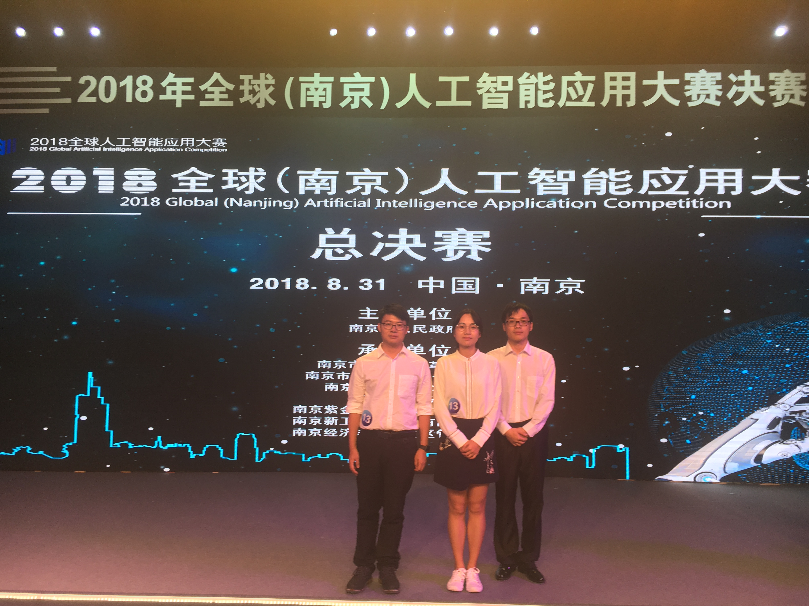
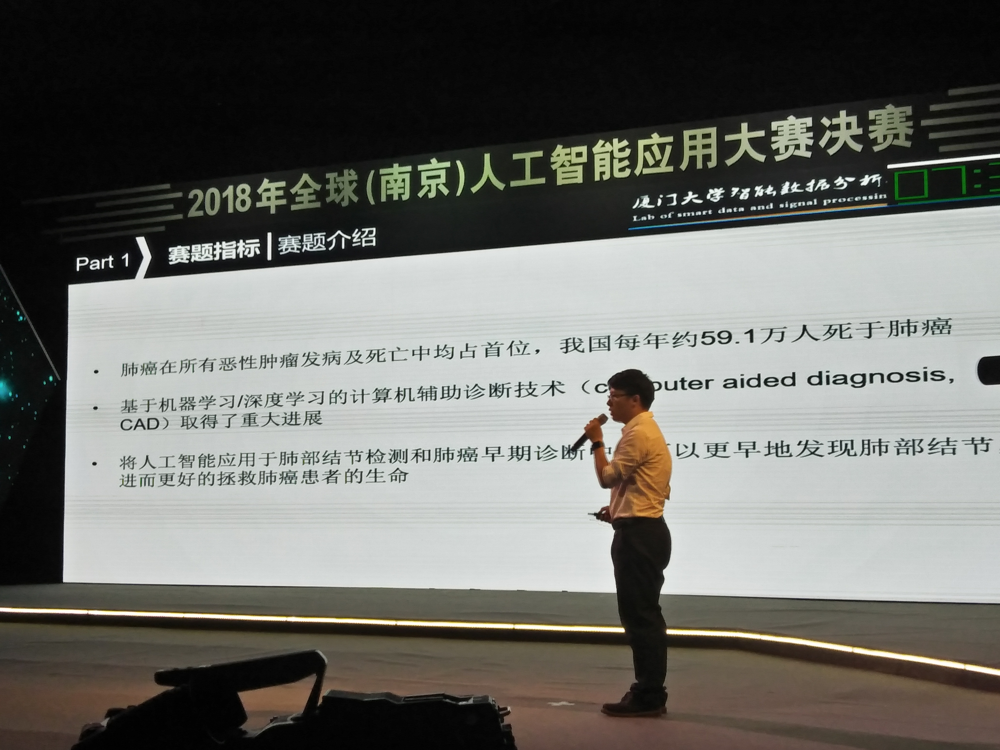

通信工程系2017级硕士研究生李斐与团队成员吴亚文、李彦龙经过初赛、复赛重重竞争。在1000多组队伍中获得前20名，成功闯入进入决赛。

全球（南京）人工智能应用大赛是是由南京市人民政府主办，由南京市发展和改革委员会、南京市经济和信息化委员会、南京市科学技术委员会等联合承办。大赛组委会针对包括“智能制造”、“智能驾驶”、“智能生活”、“智能医疗”、“智能城市”在内的 5 大产业应用领域方向遴选出 20 个赛题进行发布。经过初赛、复核、复赛，最后进行决赛路演答辩决出一二三等奖。
团队以李斐为队长，团队成员为我实验室研究生吴亚文和李彦龙。小组在最初选择“智慧医疗”产业方向的“智能肺部结节检测”题目。模型首先对肺结节进行预处理，划分出分布结构；然后利用一个19层3D端到端卷积神经网络为监测模型，经过50多轮提交改进，以该赛题初赛第一名的层级成功晋级复赛。在复核中，需要团队对新的数据进行验证，由于团队采用了自归一化IoU等处理，因此模型具有很优秀的可迁移性，跨数据中心稳定。所以在复核中依旧位于赛题第一名，并成功进入复赛。

在复赛中，由队长李斐担任答辩主讲人。他在赛前经过反复训练，不断提升自己答辩水平和答辩内容的优化，最终成功吸引了评委的兴趣，成功在1000多名队伍中脱颖而出，挤进前20名，成功晋级决赛。在决赛中，李斐稳定发挥，不屈不挠，面对评委的犀利提问，巧妙而又准确的回答。但最终不低对手，取得了第15名的成绩。